First 2010 Update
All right. 2010 is here and it's time for Incrediblecoasters to head on down to the park to begin the 2010 Coaster Season.
Hooray for Candy Themed Parking Lot Signs.
 Joining Goliath and Batman in the Shiney Category would be the two tube slides from Black Snake Summit. Too bad you won't be able to appreciate it's new shininess since it's dark inside there.
Joining Goliath and Batman in the Shiney Category would be the two tube slides from Black Snake Summit. Too bad you won't be able to appreciate it's new shininess since it's dark inside there.
"Dude. Shut up about Black Snake Summit. I need to get a sh*tload of footage of Shiney Goliath."
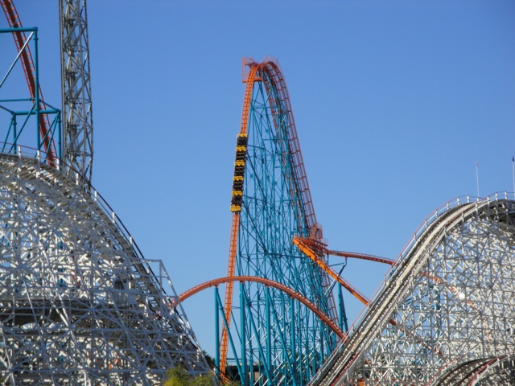
Here's a look at Goliath's Shiney New Paint Job.
To Cody's frustration, Goliath got stuck on the mid course brakes, pushing back our Goliath Filming Session to later this afternoon.
 Ahh, Who needs Goliath to film when we've got the newley painted Blue Batman.
Ahh, Who needs Goliath to film when we've got the newley painted Blue Batman.
Oh yeah. To make the day better, the park was EMPTY TODAY!!!!! I don't think I saw a single line throughout the entire day!!!!
 First coaster of the 2010 Season.
First coaster of the 2010 Season.
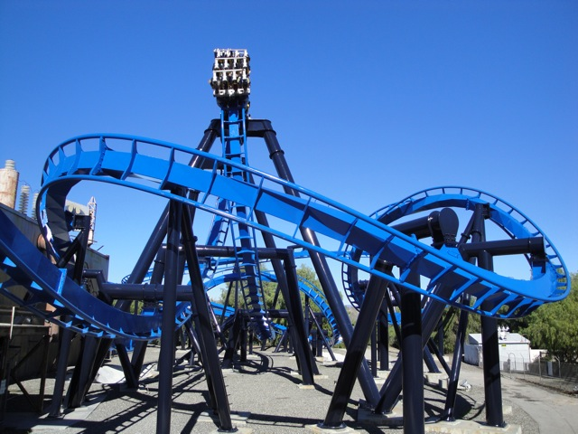
"Hey Bob, Is that Batman the ride?" "Of course not Lou. Batman the Ride is a grey roller coaster and this strange new roller coaster is blue." "But Bob, what if they just repainted it?" "You Dumbass! That's impossible!! You know it's impossible to repaint a roller coaster. They must have completely demolished Batman the Ride, and then constructed this strange new roller coaster within the past two months."
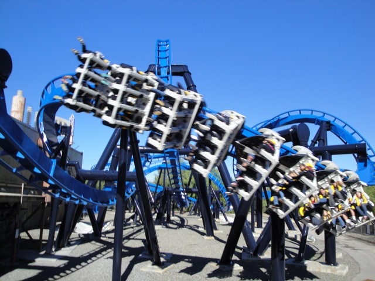
Warning. Blue forces can be found on this ride.
 Fun Fact. Batman the Ride was actually repainted with the blood of Smurfs.
Fun Fact. Batman the Ride was actually repainted with the blood of Smurfs.
While Cody was getting a few final shots, I decided to give Grinders Gearworks a courtesy ride.
I see you Psyclone.
There's something you don't see at SFMM very often. SNOW!!!!!!!!!
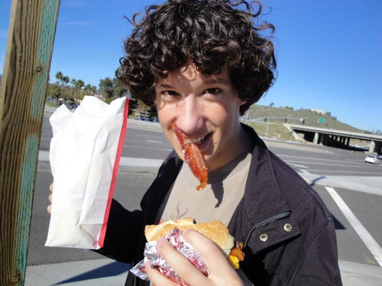
Meh. This Baconator needs more Bacon. I mean, I've only got 1 slice in my mouth right now!
I'M KEVIN!!! RULER OF THIS PATHETIC EMPTY SFMM PARKING LOT!!!! GIMME A HIGH SCHOOL DIPLOMA!!!!
 And now, back to our Goliath Filming Session.
And now, back to our Goliath Filming Session.
 The Shininess!!! It burns!!!!
The Shininess!!! It burns!!!!
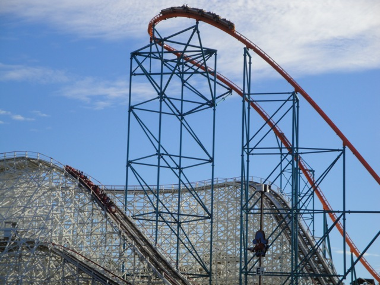
GOLIATH VS COLLOSUS!!!! FIGHT!!!!!
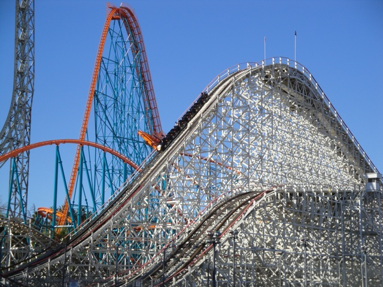
Oh yeah. Collosus was running good today.
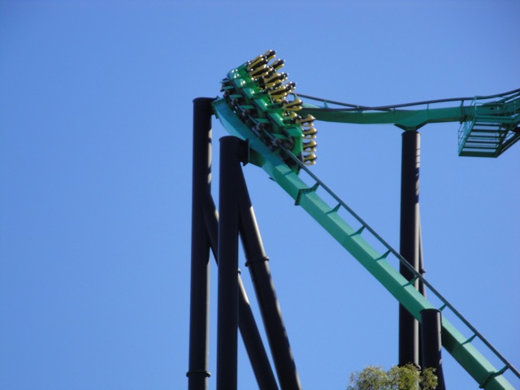
Up next would be Riddlers Revenge.
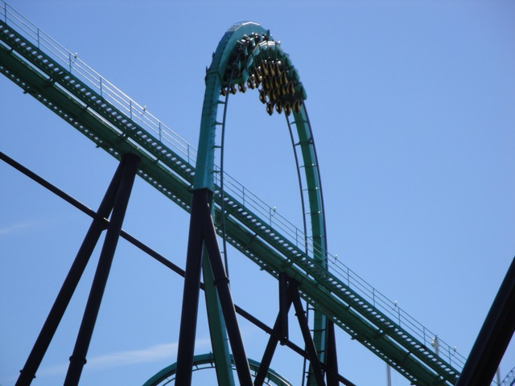
Riddlers was running really slow today. Now normally, this is a bad thing, but Slow Riddlers was actually really awesome. You get a sh*tload of hangtime in the inversions and you can really feel the banking in the turns,
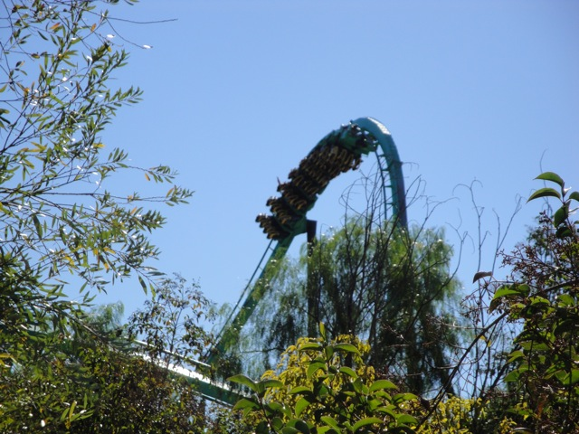
Slow Riddlers Revenge through the trees.
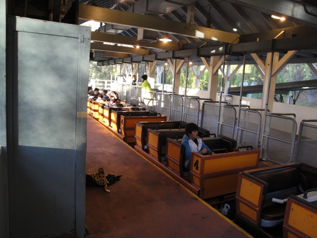
I think there was nobody here today because there was some big football game on today.
 Who needs Termination Day when we've got this!!?
Who needs Termination Day when we've got this!!?
 We ended up getting 8 rides on Terminator without having to leave the train once!!! It was awesome.
We ended up getting 8 rides on Terminator without having to leave the train once!!! It was awesome.
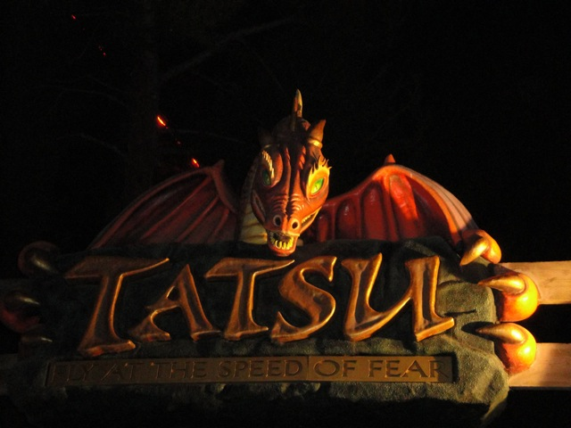
Even Tatsu ended up with a walk on wait.
 It's kind of like Night ERT at Westcoast Bash.
It's kind of like Night ERT at Westcoast Bash.
And we finally ended the day with a Shiney Goliath Marathon. Overall, I got a lot of shots and rides today. It was a sparkle of fun in this month of difficult finals, false accusations, and scary threats.
Home